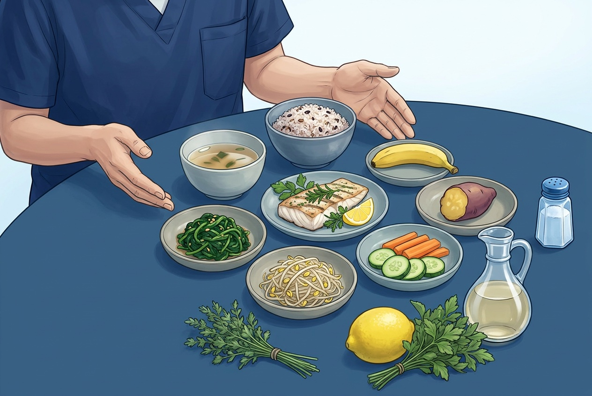

저염식 (Low-Sodium Diet) — 하루 나트륨 2,000mg 이하로 줄이면 수축기 혈압을 평균 5~10mmHg 낮출 수 있습니다. 핵심 수치와 실천법을 한 장으로 정리했습니다.
한눈에 보는 핵심 수치
한국인 평균 섭취
3,136
mg / 일 (목표의 1.6배)
권장 목표
2,000
mg / 일 (세계보건기구)
소금 환산
5
g / 일 (1작은술)
기대 효과
−5~10
mmHg (수축기 혈압)
나트륨 줄이기는 소금통보다 영양표시, 국물, 혈압 변화를 함께 보는 습관입니다.
싱겁게 먹는 한 끼

국물은 적게 · 레몬·식초·허브로 맛내기
복약 중인 분 · IMPORTANT
이뇨제(다이크로짇·라식스 등) 또는 안지오텐신 계열 혈압약(ARB·ACE 억제제)을 드시는 중에 갑자기 나트륨을 크게 줄이면 기립성 저혈압·어지러움·전해질 불균형이 생길 수 있습니다.1~2주에 걸쳐 조금씩 줄이고, 어지러움이 이어지면 바로 외래로 연락 주세요. (☏ 031-893-4560)
실천 항목 (Do & Don't)
이렇게 하세요 · DO
이것은 피하세요 · DON'T
1. 신선한 채소·과일 매끼 ½접시 이상 (나트륨 50mg 미만)
1. 국물 다 먹기 — 라면 국물 1대접 ≈ 1,800mg
2. 직접 조리할 때 소금 계량 — 1작은술(5g) 이내
2. 젓갈·장아찌 1큰술 ≈ 1,200mg (하루 목표의 60%)
3. 레몬즙·식초·허브·후추로 맛내기 (대체 양념)
3. 가공육 — 햄·소시지 100g ≈ 900mg
4. 칼륨 많은 식품 — 바나나·감자·시금치·고구마 (나트륨 배출 ↑) · 콩팥병이 있거나 안지오텐신 계열 혈압약·칼륨 보존 이뇨제를 드시면 먼저 상의
4. 외식 소스·드레싱 듬뿍 (간장 1큰술 ≈ 1,000mg)
5. 영양성분표 확인 — 1회분당 나트륨 400mg 이하 선택
5. 인스턴트·배달 — 짜장면 1그릇 ≈ 2,400mg
6. 흰살생선·두부·계란으로 단백질 (나트륨 100mg 미만)
6. 통조림·즉석국 자주 사용 (1,000mg 이상)
7. 물 하루 1.5L 이상 — 나트륨 배출 촉진 (수분 제한 중이면 그 지시대로)
7. 단무지·피클 등 절임류 무제한 섭취
저염식 가이드 · 식품별 나트륨 함량 & 실천 플랜
자주 먹는 식품의 나트륨 함량과 실천 플랜
한국인이 자주 먹는 음식의 1회분 나트륨 함량과 라벨 읽는 법, 1주일에 걸쳐 조금씩 줄이는 방법입니다.